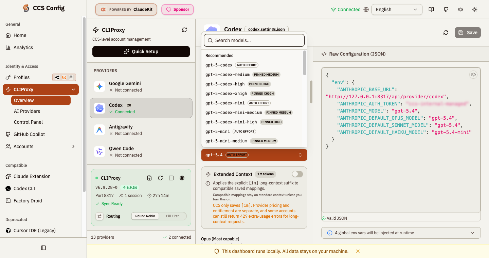

Issue 1058
Codex selector now exposes pinned effort variants
Capture environment: local dashboard at http://127.0.0.1:3001/cliproxy,
light theme, Codex provider editor, Model Config tab.
What changed
The selector now offers real codex model variants like -high and -xhigh.
Why it matters
The dashboard can now emit the exact suffixed model IDs that runtime code already understands.
Review cue
Look at the opened model picker: suffixed entries appear as first-class options with pinned-effort badges.
Targeted evidence
Codex provider editor model picker
The open selector shows canonical rows plus generated pinned variants such as
gpt-5.3-codex-high, gpt-5.3-codex-xhigh, and
gpt-5.4-xhigh.
